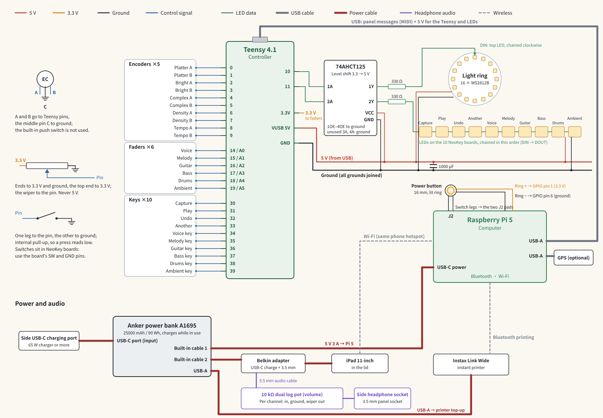

屏幕特写
操作
正面
俯视控件
背面镜头
侧面接口
3D 模型
电路图
直接点 iPad 屏幕和箱上的控件；拖动空白处旋转，滚轮或双指缩放
FretCase 电路图
3D 模型
电路图

引脚号和
device/firmware/fretcase_controller/pins.h
一致；改接线时只改那个文件。
编码器、按键都接地，用 Teensy 内部上拉；推子两端接 3.3 V 和地，推到顶读到 3.3 V。Teensy 4.1 的引脚不能接 5 V。
两条灯链的数据线经 74AHCT125 升到 5 V，再各串一个 330 Ω 电阻；灯的 5 V 和地之间并一个 1000 µF 电容。
灯的 5 V 先取自 Teensy 的 USB 5 V（来自 Pi）。Pi 5 用充电宝的 5 V 3 A 供电时，USB 口总共只给 600 mA：上电后实测电流，超过约 0.5 A 就在固件里限亮度，或者改用充电宝 USB-A 口单独给灯供 5 V，并和 Teensy 共地。
电源键接 Pi 5 板上的 J2 两个焊盘（焊两针排针）：按一下开机，再按一下正常关机。灯圈接 Pi 的 3.3 V，并在 EEPROM 设 POWER_OFF_ON_HALT=1，关机后才熄灭。
iPad 和 Pi 走无线：连同一个手机热点。拍立得打印机走蓝牙，平时由充电宝的 USB-A 口补电。
总音量是无源的：Belkin 转接头的耳机输出接双联对数电位器，再到面板耳机口；左右声道各走一联，地线直通。